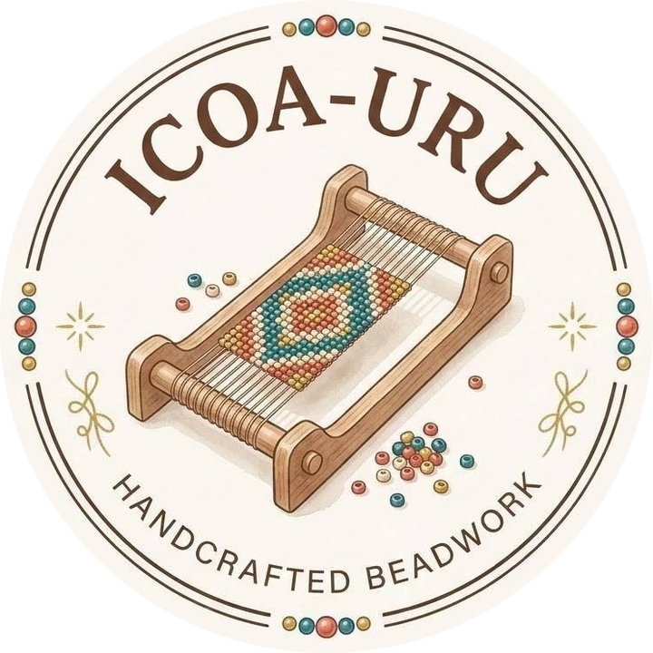

Icoa-Uru
Your website, editor and control center, all in one place.
The website isn't running yet
- 1In this same folder, double-click
Start Website.bat - 2A black window opens. Leave it open. The first time, it downloads what it needs (a few minutes).
- 3Your browser opens the control center by itself. This page also updates as soon as the website is running.
A web page can't start programs on your computer by itself (browsers block that for safety), so the start file does it.
The website is running